Phần I: Lời Tựa & 3 Nguyên Lý Căn Bản Đầu Tiên
Triết lý đơn giản hóa kỹ thuật, nghệ thuật thả lỏng cơ thể, tư thế sẵn sàng hoàn hảo và đòn bẩy mở vợt sớm
1. Lời Giới Thiệu Của Stan Smith: Bản Chất Của Sự Đơn Giản Trong Quần Vợt Đỉnh Cao
Trong cuốn sách này, tôi muốn trình bày những quan điểm đúc kết sâu sắc nhất về phương thức giúp mọi tay vợt — từ người mới bắt đầu cầm vợt cho tới vận động viên thi đấu chuyên nghiệp — có thể chơi quần vợt hiệu quả và chuẩn xác hơn.
Nội dung cuốn sách được chia thành hai phần trọng tâm. Trong phần thứ nhất, tôi mô tả sáu hành động căn bản cốt lõi chi phối hầu như mọi tình huống xử lý bóng trên sân thi đấu. Bạn chỉ cần mài giũa và hoàn thiện một trong sáu nguyên lý nền tảng này, trình độ thi đấu của bạn chắc chắn sẽ có bước tiến vượt bậc.
Trong phần thứ hai, tôi cùng những đồng đội và đối thủ xuất sắc bậc nhất thế giới sẽ phân tích chi tiết từng cú đánh cụ thể qua chuỗi hình ảnh phân giải chuyển động tốc độ cao. Dù đối mặt với bất kỳ cú giao bóng, trả giao, thuận tay, trái tay, vô-lê hay đập bóng nào, sáu nguyên lý căn bản này luôn là nền móng bất biến giúp bạn giữ vững sự ổn định và tạo ra uy lực tối đa.
2. Nguyên Lý Vàng #1: Thả Lỏng Hoàn Toàn Trên Sân Đấu (Relax on Court)
Sự căng cứng tâm lý và cơ bắp phá hủy nhiều trận đấu quần vợt hơn bất kỳ sự thiếu hụt tài năng nào. Trạng thái căng thẳng ngăn cản các nhóm cơ vận động một cách tự nhiên, làm suy kiệt thể lực nhanh chóng, phá vỡ nhịp điệu căn thời gian (timing) và cướp đi niềm vui nguyên bản khiến chúng ta bước ra sân quần vợt.
Học cách thả lỏng trên sân đấu là nguyên tắc ít khi được nhấn mạnh trong các giáo trình truyền thống, nhưng lại là nền tảng chi phối toàn bộ năm nguyên lý căn bản còn lại. Khi các cơ bắp của bạn ở trạng thái thoải mái, chuyển động xoay thân và vung vợt sẽ diễn ra trơn tru như dòng nước chảy. Ngược lại, nếu bạn gồng cứng cổ tay hay siết chặt cán vợt với áp lực mười trên mười, bạn đang tự bóp nghẹt tốc độ đầu vợt của chính mình.
Hãy duy trì thói quen lắc nhẹ cánh tay giữa các điểm số, hít thở sâu bằng cơ hoành và nới lỏng lực cầm vợt về mức bốn trên mười trong giai đoạn chờ bóng. Một cơ thể thả lỏng mới có khả năng phản xạ bùng nổ trong chớp mắt.
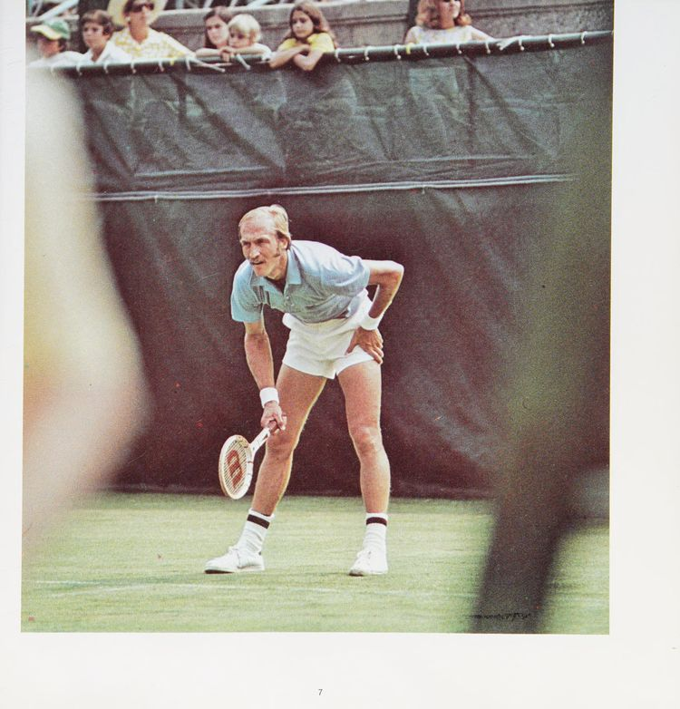
Hình 1: Stan Smith chứng minh tư thế thả lỏng toàn diện — giải phóng căng thẳng vùng vai, thả lỏng cổ tay và giữ nhịp thở ổn định trước mỗi pha giao đấu.
3. Nguyên Lý Vàng #2: Luôn Trong Tư Thế Sẵn Sàng (Be Ready)
Trong một môn thể thao đòi hỏi khả năng phán đoán hướng bóng và di chuyển liên tục như tennis, bạn chỉ có thể phát huy tối đa hiệu suất vận động từ một tư thế sẵn sàng chuẩn mực và cân bằng tuyệt đối.
Tư thế sẵn sàng lý tưởng đòi hỏi hai bàn chân mở rộng bằng vai, trọng lượng cơ thể được phân bổ đều lên nửa trước của hai bàn chân, tuyệt đối không dồn gót xuống mặt sân. Hai đầu gối hơi chùng xuống để hạ thấp trọng tâm, sẵn sàng kích hoạt các nhóm cơ đùi lớn cho bước bật tách (split-step).
Cây vợt phải được giữ trực diện trước ngực, đầu vợt hướng thẳng về phía đối thủ, với tay không thuận nâng đỡ nhẹ nhàng tại phần cổ vợt. Việc giữ vợt ngay tại trục trung tâm cho phép bạn lập tức kéo vợt sang bên thuận hoặc bên trái mà không lãng phí bất kỳ một phần mười giây quý giá nào.
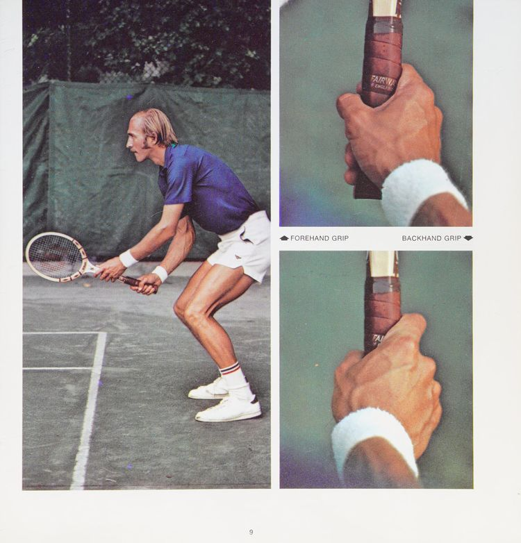
Hình 2: Trục cơ thể cân bằng, đầu gối chùng, trọng lượng dồn nửa trước bàn chân và cây vợt hướng thẳng về phía trước để sẵn sàng phản xạ hai phía.
4. Nguyên Lý Vàng #3: Mở Vợt Ra Sau Sớm Nhất Có Thể (Get Racquet Back Early)
Một tay súng thiện xạ nơi miền Viễn Tây là người có khả năng rút súng ra khỏi bao nhanh nhất. Tương tự như vậy, một tay vợt không mở vợt ra sau kịp thời chắc chắn sẽ là người liên tục mắc các lỗi đánh hỏng sơ đẳng và phải nhận thất bại cay đắng trong thi đấu.
Rất nhiều người chơi nghiệp dư có thói quen chờ cho bóng bay qua lưới hoặc nảy lên khỏi mặt sân rồi mới bắt đầu đưa vợt ra sau. Đó là nguyên nhân trực tiếp dẫn tới những cú đánh vội vã, giật cục và mất kiểm soát.
Bí quyết của các vận động viên chuyên nghiệp là thực hiện động tác xoay thân trên ngay khoảnh khắc bóng rời mặt vợt của đối phương. Hãy sử dụng tay không thuận để hỗ trợ đẩy cây vợt ra sau cùng lúc với việc xoay hông và vai sang một bên. Khi bạn đến được vị trí chạm bóng với cây vợt đã được chuẩn bị sẵn sàng ở phía sau, toàn bộ sự chú ý của bạn có thể dồn trọn vẹn vào việc căn chỉnh điểm tiếp xúc hoàn hảo.
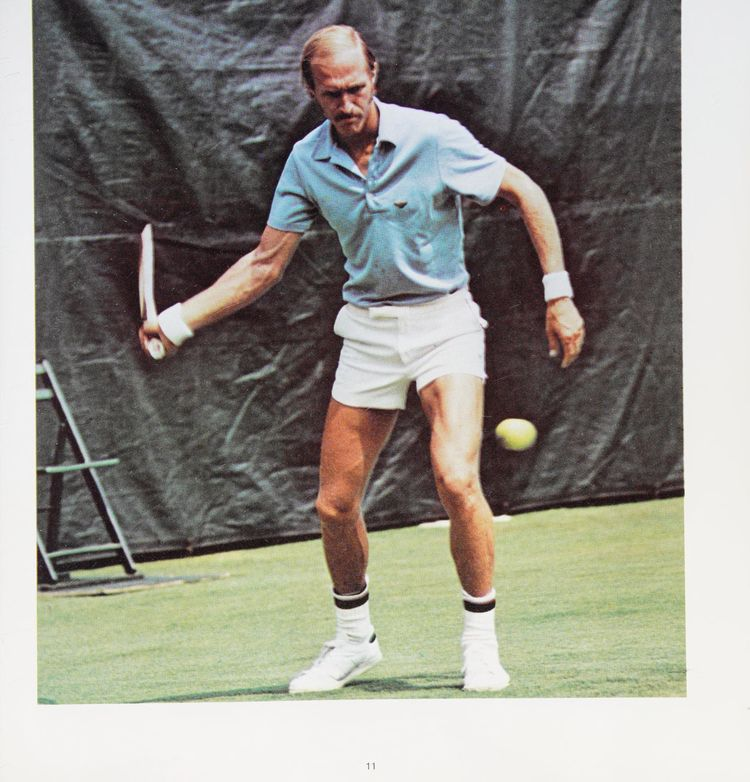
Hình 3: Chuỗi động tác xoay vai và đưa vợt ra sau ngay khi nhận diện đường bóng — nền tảng tạo nên cú đánh chủ động và uy lực.
Phần II: 3 Nguyên Lý Căn Bản Tiếp Theo & Hệ Thống Tự Kiểm Soát
Điểm chạm bóng tĩnh, nguyên lý trọng lượng cơ thể phía trước, đà kết thúc trọn vẹn và quy trình tự sửa lỗi
5. Nguyên Lý Vàng #4: Dõi Mắt Theo Bóng Đến Điểm Chạm (Keep Eye on the Ball)
Đã bao nhiêu lần và trong bao nhiêu môn thể thao khác nhau bạn từng nghe thấy khẩu hiệu: "Hãy luôn dõi mắt nhìn bóng"?
Trong quần vợt, tôi chuyển hóa lời khuyên tối thượng này thành một hành động cụ thể: "Hãy giữ mắt nhìn chăm chú vào đúng điểm tiếp xúc bóng thêm một giây sau khi cú đánh đã hoàn tất."
Mắt thường của con người gần như không thể thấy được khoảnh khắc bóng nén vào các sợi dây cước vì chuyển động diễn ra quá nhanh. Tuy nhiên, việc cố gắng nhìn vào điểm tiếp xúc sẽ neo giữ phần đầu và cổ của bạn hoàn toàn bất động trong suốt giai đoạn va chạm quyết định.
Sai lầm phổ biến nhất của các tay vợt phong trào là nhấc đầu lên quá sớm để nhìn xem bóng có bay vào sân hay không. Hành động nhấc đầu này làm lệch trục vai, thay đổi góc mặt vợt ngay trước khoảnh khắc va chạm và khiến bóng bay vọt ra ngoài hoặc rúc lưới. Hãy tập thói quen để quả bóng bay đi trước, rồi mới từ từ xoay đầu quan sát kết quả.
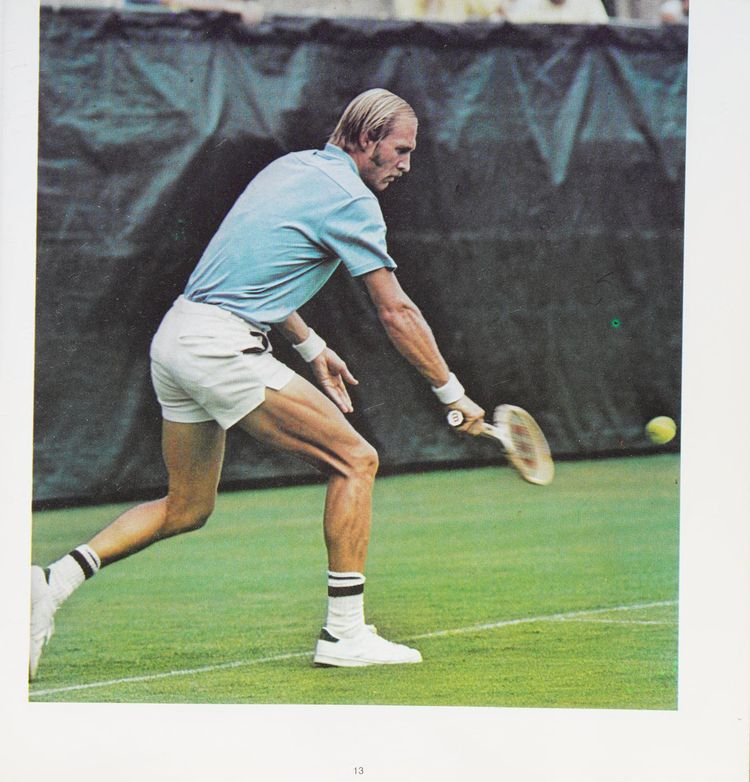
Hình 4: Đầu và mắt của Stan Smith được khóa chặt tại điểm tiếp xúc bóng ngay cả khi quả bóng đã rời khỏi mặt lưới vợt.
6. Nguyên Lý Vàng #5: Đánh Bóng Ở Phía Trước Cơ Thể (Hit the Ball Out in Front)
Khi bạn tiếp xúc bóng ở vị trí phía trước thân người thay vì để bóng trôi ngang hông, bạn sẽ tạo ra uy lực vượt trội với một nỗ lực cơ bắp tối thiểu. Toàn bộ trọng lượng cơ thể của bạn sẽ được truyền thẳng vào đường bóng tương tự như cách một cầu thủ bóng chày bước chân về phía trước để vung chày đón bóng qua đĩa nhà.
Hãy quan sát môn golf: đối với cú phát bóng bằng gậy driver — cú đánh cần uy lực lớn nhất — quả bóng luôn được đặt tiến về phía trước gần bàn chân dẫn đường. Trong tennis cũng hoàn toàn tương tự.
Khi tiếp xúc bóng ở phía trước, cánh tay và cán vợt tạo thành một góc đòn bẩy cơ sinh học vững chắc nhất. Ngược lại, nếu bạn để bóng bay ngang người hoặc vượt qua hông, cổ tay và khuỷu tay buộc phải chịu toàn bộ xung lực va đập, vừa làm cú đánh trở nên yếu ớt vừa là nguyên nhân hàng đầu dẫn đến chấn thương khuỷu tay Tennis Elbow.
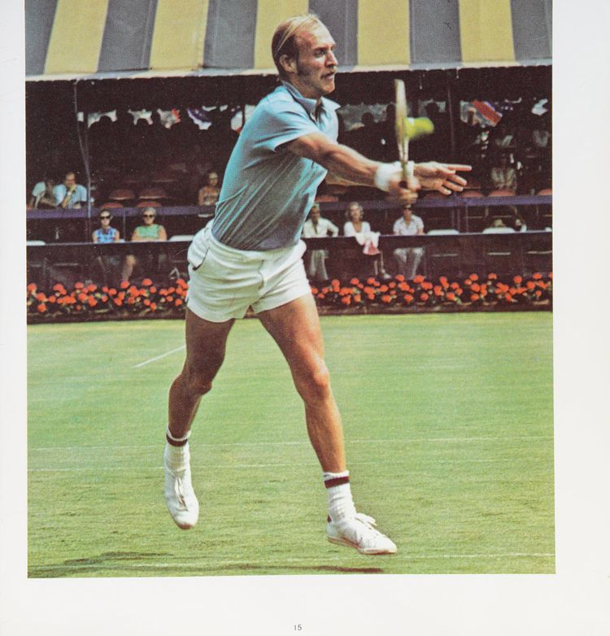
Hình 5: Điểm tiếp xúc bóng luôn nằm ở phía trước hông dẫn đường, cho phép toàn bộ trọng lượng cơ thể dồn vào cú đánh.
7. Nguyên Lý Vàng #6: Mở Rộng Đà Vung Vợt Kết Thúc Trọn Vẹn (Full Follow-Through)
Một quan niệm sai lầm rất tai hại ở những người mới chơi là nghĩ rằng một đà kết thúc vợt dài sẽ khiến bóng bay mất kiểm soát ra ngoài sân. Trên thực tế, quy luật cơ học diễn ra hoàn toàn ngược lại: đà vung vợt kết thúc càng trọn vẹn và tự nhiên, khả năng kiểm soát quỹ đạo và điểm rơi của bóng càng tuyệt đối.
Đà kết thúc dài cho phép mặt vợt đồng hành cùng quả bóng trong một quãng đường dài hơn, giúp bạn dẫn dắt hướng bay và tạo ra độ xoáy mong muốn. Khi tôi đạt phong độ cao nhất, tôi luôn có cảm giác mình có thể điều khiển quả bóng đi tới bất kỳ vị trí nào trên sân nhờ duy trì đà kết thúc vợt mượt mà qua vai.
Nếu bạn dừng vợt đột ngột ngay sau khi chạm bóng, bạn đang thực hiện một cú giật cục làm mất đi sự ổn định của quỹ đạo bay. Hãy để cây vợt tiếp tục hành trình tự nhiên của nó, bay vút qua vai đối diện và kết thúc trong sự cân bằng hoàn hảo của cơ thể.
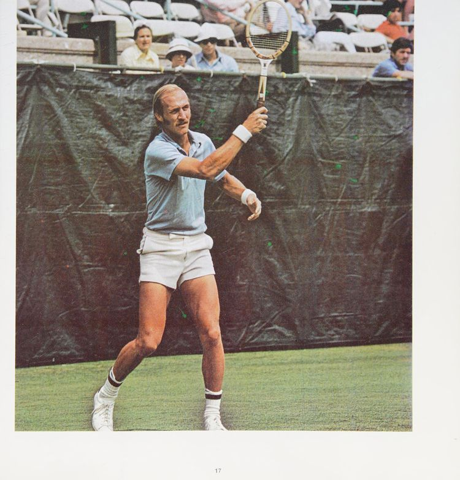
Hình 6: Đà vung vợt kết thúc tự nhiên qua vai đối diện, đảm bảo kiểm soát quỹ đạo bóng và giữ thăng bằng tuyệt đối cho cơ thể.
8. Quy Trình Tự Kiểm Tra 6 Nguyên Lý Vàng Khi Thi Đấu
Mỗi khi bạn cảm thấy những cú đánh của mình bị chệch hướng hoặc mất đi độ ổn định trong một trận đấu căng thẳng, đừng cố gắng thay đổi toàn bộ kỹ thuật của mình. Hãy bình tĩnh tự rà soát lại sáu nguyên lý nền tảng này theo thứ tự ưu tiên:
Thứ nhất, cơ thể bạn có đang bị căng cứng hay không? Hãy lắc tay và thở sâu.
Thứ hai, bạn đã về tư thế sẵn sàng và thực hiện bước bật tách trước khi đối thủ chạm bóng hay chưa?
Thứ ba, bạn đã mở vợt ra sau ngay khi nhận diện đường bóng chưa, hay đang chờ bóng nảy mới kéo vợt?
Thứ tư, đầu của bạn có giữ yên tại điểm tiếp xúc bóng không, hay đã nhấc lên quá sớm?
Thứ năm, bạn có đang tiếp xúc bóng ở phía trước hông dẫn đường không, hay bóng đang áp sát thân người?
Thứ sáu, đà vung vợt kết thúc của bạn có đi hết biên độ qua vai không, hay đang bị ghì giật lại lưng chừng?
Chỉ cần phát hiện và điều chỉnh đúng một mắt xích bị lỗi trong chuỗi hành động này, bạn sẽ lập tức tìm lại được cảm giác bóng và nhịp điệu chiến thắng trên sân đấu.
Phần III: Phân Tích Kỹ Thuật Thực Chiến Từ Các Nhà Vô Địch
Nghiên cứu chuỗi chuyển động tốc độ cao: Giao bóng của Charles Pasarell & Roscoe Tanner, Thuận tay của Brian Gottfried, Trái tay của Tom Gorman
9. Phân Tích Cú Giao Bóng Uy Lực Của Charles Pasarell
Charles Pasarell, giám đốc quần vợt tại Palmas del Mar thuộc Puerto Rico, sở hữu một phong cách giao bóng kinh điển chú trọng đặc biệt vào nhịp điệu và khả năng căn thời gian hoàn hảo. Sự phối hợp mượt mà giữa đà vung vợt, tung bóng và chuyển dịch trọng lượng cơ thể của anh là hình mẫu lý tưởng cho bất kỳ tay vợt nào.
Trong chuỗi động tác phân giải, Charlito bắt đầu từ tư thế thả lỏng cách vạch giữa đường cuối sân khoảng hai đến ba feet. Anh hạ hai tay đồng bộ, đưa vợt ra sau trong khi tay trái nâng bóng lên nhẹ nhàng theo phương thẳng đứng. Điểm mấu chốt là đầu vợt rơi tự do xuống phía sau lưng trong tư thế gãi lưng sâu, cho phép các cơ ngực và vai kéo căng tối đa như một cánh cung nạp đầy năng lượng.
Khoảnh khắc bật nhảy vươn người đón bóng diễn ra tại điểm cao nhất có thể với cánh tay duỗi thẳng hoàn toàn. Trọng lượng cơ thể lao mạnh về phía trước qua vạch cuối sân, đưa toàn bộ cơ thể vào thế sẵn sàng cho cú trả bóng tiếp theo của đối phương.
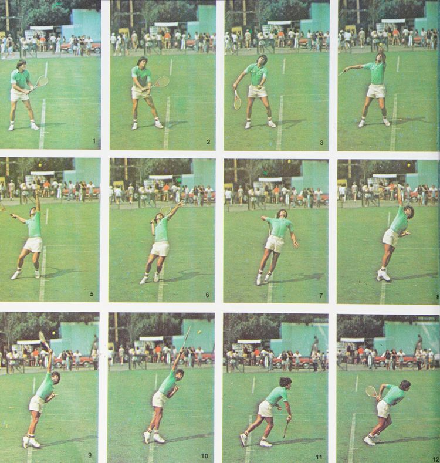
Hình 7: Chuỗi chuyển động giao bóng phẳng uy lực của Charles Pasarell — từ nhịp hạ vợt đồng bộ, tích lũy năng lượng đến cú bật nhảy duỗi thân tuyệt đối tại điểm tiếp xúc.
10. Cú Giao Bóng Tay Trái "Đại Bác" Của Roscoe Tanner
Roscoe Tanner sở hữu cú giao bóng tay trái nhanh và hủy diệt bậc nhất trong lịch sử quần vợt hiện đại. Cú giao bóng dạng đại bác của anh thường được so sánh với uy lực sấm sét của Pancho Gonzales — người thầy vĩ đại đã trực tiếp rèn giũa kỹ thuật cho Roscoe.
Điểm độc đáo trong cú giao bóng của Tanner là nhịp tung bóng tương đối thấp và nhịp vung vợt chớp nhoáng. Anh không chờ bóng rơi mà tấn công quả bóng ngay khi nó vừa đạt độ cao tối đa, khiến đối thủ hoàn toàn không có thời gian đọc hướng xoáy. Cổ tay của Tanner cực kỳ linh hoạt, tạo ra độ xoáy xoáy ngang và xoáy cắm hiểm hóc khiến bóng sau khi chạm đất trượt ngang với tốc độ kinh hoàng.
Bài học quý giá từ Tanner dành cho mọi tay vợt là sức mạnh giao bóng không đến từ cơ bắp cánh tay đơn thuần, mà sinh ra từ tốc độ xoay bùng nổ của vai và khả năng bung lực đúng thời điểm của cẳng tay.
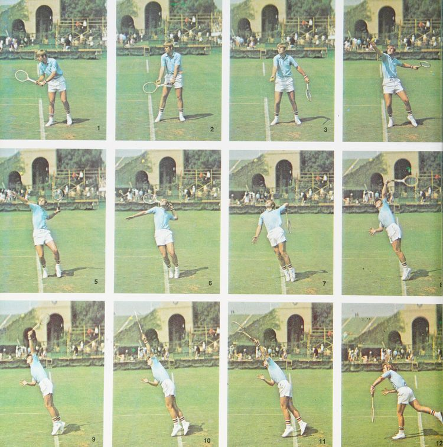
Hình 8: Động tác phát bóng siêu tốc của Roscoe Tanner — nhịp tung bóng thấp chủ động, xoay vai bùng nổ và đường bóng cuộn hiểm hóc của tay vợt thuận tay trái.
11. Cú Đánh Thuận Tay Chuẩn Mực Của Brian Gottfried
Chiến thắng lịch sử của Brian Gottfried tại giải đấu Alan King Classic năm 1973 ở Las Vegas đã chứng minh sự vượt trội của một nền tảng kỹ thuật căn bản chuẩn mực. Cú thuận tay của Brian là mẫu mực về sự ổn định và tạo xoáy topspin sâu cuối sân.
Trong chuỗi khung hình, Brian thực hiện xoay thân trên ngay khi bóng đối phương vừa bay qua lưới. Trọng lượng cơ thể được chuyển vững chắc sang chân sau, đầu gối chùng xuống tạo bệ đỡ. Khi vung vợt tấn công, đầu vợt hạ thấp hơn quả bóng để tạo quỹ đạo vuốt từ dưới lên trên, đồng thời bước chân trước tiến vào sân tiếp nhận toàn bộ động lượng.
Điểm tiếp xúc bóng diễn ra chuẩn xác ở phía trước hông dẫn đường, và đà kết thúc vợt kéo dài vượt qua vai đối diện, tạo nên quỹ đạo bóng bổng an toàn qua lưới nhưng cắm sâu đầy uy lực vào góc sân đối thủ.
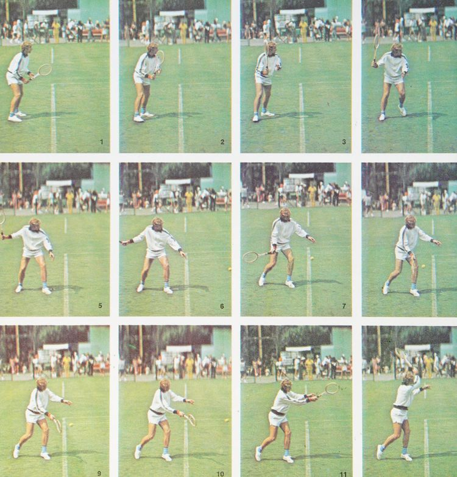
Hình 9: Cú thuận tay topspin của Brian Gottfried — mở vợt sớm, hạ thấp đầu vợt tạo xoáy từ dưới lên và kết thúc trọn vẹn qua vai.
12. Cú Đánh Trái Tay Một Tay Kinh Điển Của Tom Gorman
Tom Gorman là một quý ông điềm đạm ngoài đời thường, nhưng trên sân đấu anh là một chiến binh ngoan cường với cú đánh trái tay một tay sắc sảo bậc nhất thế giới.
Nhiều người thường tự hỏi tại sao các tay vợt chuyên nghiệp hàng đầu lại thường có cú đánh trái tay mượt mà hơn cú thuận tay. Câu trả lời nằm ở quy luật giải phẫu: chuyển động vung tay trái một tay là một chuyển động tự nhiên của khớp vai mở rộng, tương tự như động tác phóng lao hay ném đĩa của người tiền sử.
Tom Gorman thực hiện cú trái tay bằng cách xoay lưng một phần về phía lưới, tạo góc xoay vai hơn chín mươi độ. Khóa cổ tay được giữ vững tuyệt đối tại thời điểm va chạm. Cánh tay mở rộng tối đa về hướng đánh của quả bóng, giữ mặt vợt vuông góc để kiểm soát đường bay trước khi kết thúc cao ngang đầu. Đây là bài học kinh điển về việc sử dụng toàn bộ khối cơ lưng và vai để tạo lực thay vì phụ thuộc vào cổ tay yếu ớt.
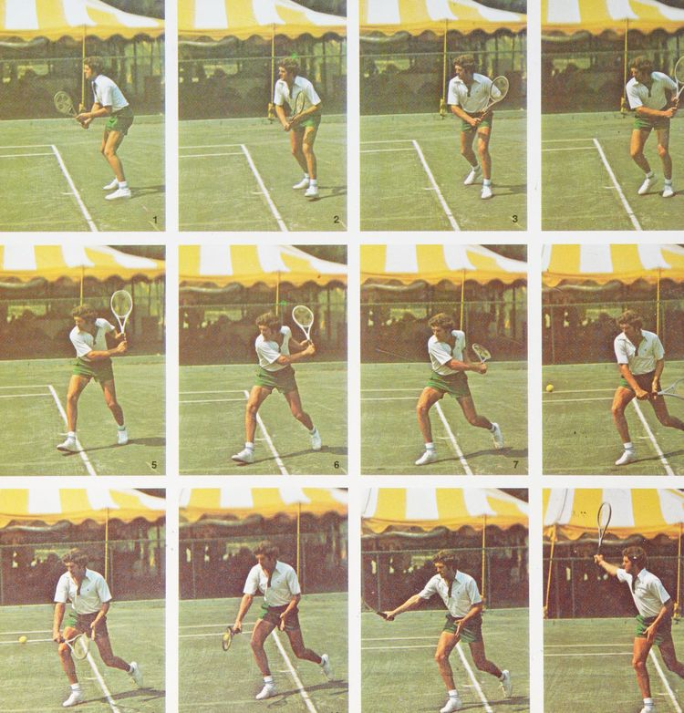
Hình 10: Cú trái tay một tay kinh điển của Tom Gorman — xoay vai sâu đón bóng, khóa cổ tay ổn định và vung vợt mở rộng theo hướng mục tiêu.
Phần IV: Kỹ Thuật Lưới, Cú Đập Smash & Nghệ Thuật Tâm Lý Chiến
Vô-lê chuẩn xác, đập bóng overhead kéo cắt, đánh giá cú trái hai tay, chiến thuật đánh đôi và tâm lý vững vàng
13. Kỹ Thuật Bắt Vô-Lê Trên Lưới Chuẩn Xác Cùng Wendy Overton & Erik van Dillen
Cú bắt vô-lê thuận tay và trái tay được Wendy Overton và Erik van Dillen trình bày cạnh nhau để làm nổi bật sự tương đồng cốt lõi: cả hai cú đánh đều không hề sử dụng động tác mở vợt ra sau.
Erik van Dillen, người đồng đội ăn ý của tôi tại đội tuyển Davis Cup Hoa Kỳ, sở hữu phản xạ lưới nhanh bậc nhất thế giới. Khi đứng trên lưới, thời gian phản ứng chỉ tính bằng phần mười giây. Bất kỳ nỗ lực đưa vợt ra sau nào cũng sẽ khiến bạn bị muộn nhịp và để bóng bay qua tầm kiểm soát.
Quy tắc vàng của cú vô-lê là giữ đầu vợt luôn cao hơn cổ tay, xoay nhẹ vai để định hình góc mặt vợt và bước chân chéo về phía trước để đón bóng ở phía trước ngực. Động tác va chạm giống như một cú đấm chớp nhoáng (punch) với cổ tay được khóa chặt tuyệt đối. Hãy để lực bóng của đối phương dội ngược lại mặt vợt của bạn thay vì cố gắng vung vợt tạo thêm lực.
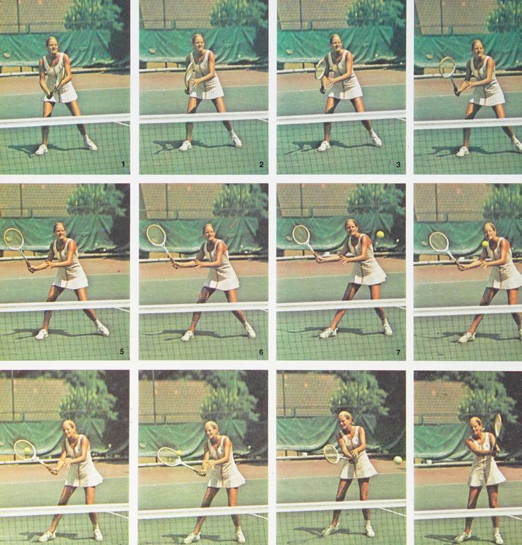
Hình 11: So sánh đối xứng cú vô-lê thuận tay và trái tay — không mở vợt ra sau, khóa cổ tay vững vàng và bước chân chặn đón bóng phía trước mặt.
14. Cú Đập Bóng Trên Đầu (Overhead Smash) Của Stan Smith
Khán giả luôn cảm thấy phấn khích tột độ trước một cú đập bóng trên đầu thành công. Đây là vũ khí tối thượng để kết liễu những quả bóng bổng (lob) phòng thủ của đối phương và thể hiện trọn vẹn uy lực tấn công của quần vợt hiện đại.
Về bản chất cơ học, cú đập overhead là một dạng phái sinh của chuyển động giao bóng. Do đó, bạn không nên vội vã luyện cú smash chừng nào kỹ thuật giao bóng của bạn chưa thực sự thuần thục và ổn định.
Khi đối thủ lốp bóng qua đầu, hành động đầu tiên của bạn phải là nghiêng người sang một bên và đưa vợt lên vị trí gãi lưng ngay lập tức. Tay không thuận chỉ thẳng lên quả bóng trên không để vừa căn tầm nhìn, vừa giữ thăng bằng cho lồng ngực.
Đối với những quả bóng bổng bay sâu về phía sau, kỹ thuật nhảy kéo cắt (scissors kick) là bí quyết then chốt: bạn bật nhảy bằng chân sau, quẫy đổi chân trên không để chuyển toàn bộ động lượng cơ thể về phía trước ngay tại điểm tiếp xúc bóng cao nhất, sau đó tiếp đất êm ái trên chân dẫn đường và sẵn sàng cho tình huống tiếp theo.
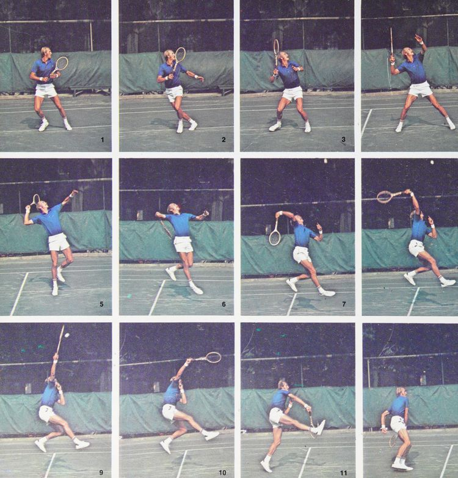
Hình 12: Chuỗi động tác đập bóng trên đầu với kỹ thuật bật nhảy kéo cắt (scissors kick) của Stan Smith — định vị bóng bằng tay chỉ, vươn cao tiếp xúc tại đỉnh và chuyển trọng tâm dứt khoát.
15. Đánh Giá Khách Quan Về Cú Đánh Trái Tay Hai Tay (Two-Handed Backhand)
Tại các giải đấu trẻ gần đây, tôi nhận thấy ngày càng nhiều tay vợt triển vọng sử dụng cú đánh trái tay bằng cả hai tay. Mặc dù cá nhân tôi sử dụng cú trái một tay truyền thống, tôi tin rằng chúng ta sẽ chứng kiến sự bùng nổ của cú đánh hai tay trong thập kỷ tới khi lứa vận động viên trẻ này trưởng thành.
Ưu điểm lớn nhất của cú trái hai tay là sự vững chắc phi thường. Việc có bàn tay không thuận trợ lực giúp người chơi xử lý các quả bóng bổng trên vai dễ dàng hơn rất nhiều, đồng thời tăng cường khả năng bẻ góc chéo sân hiểm hóc ngay trong những pha trả giao bóng tốc độ cao.
Tuy nhiên, hạn chế cố hữu của cú trái hai tay là tầm với bị thu hẹp đáng kể khi bị ép ra sát hai góc sân. Người chơi buộc phải di chuyển bước chân nhiều hơn và khó chuyển đổi linh hoạt sang các cú cắt lát (slice) phòng thủ hoặc các pha vô-lê tinh tế trên lưới. Nếu bạn lựa chọn cú trái hai tay, hãy đảm bảo rằng bạn liên tục rèn luyện sự linh hoạt của đôi chân để bù đắp cho khoảng cách sải tay bị thiếu hụt.
16. Nghệ Thuật Phối Hợp Đánh Đôi Đỉnh Cao (Better Doubles Play)
Một lối chơi đôi hiệu quả, cũng giống như một cuộc hôn nhân hạnh phúc, trước hết phụ thuộc vào tinh thần đồng đội và sự thấu hiểu lẫn nhau. Hãy tìm kiếm một người đồng đội mà bạn cảm thấy hòa hợp và có thể trao đổi thoải mái cả trong lẫn ngoài sân đấu.
Giao tiếp là yếu tố then chốt nhưng đòi hỏi sự tinh tế cao độ. Bạn cần biết chính xác khi nào nên nói và khi nào nên giữ im lặng, điều gì nên khích lệ và điều gì cần tránh nhắc tới khi đồng đội đang gặp khó khăn. Một ánh mắt tin tưởng hay một lời động viên đúng lúc có giá trị gấp trăm lần những lời chỉ trích gay gắt.
Về mặt chiến thuật, cặp đôi phải luôn di chuyển như thể được nối với nhau bằng một sợi dây vô hình: khi một người bị kéo sang trái, người kia phải dịch chuyển theo để khép kín khoảng trống trung lộ. Đừng đứng chết ở vị trí phòng ngự thụ động; hãy tích cực di chuyển chéo cắt lưới (poaching) để tạo áp lực tâm lý thường trực lên đối phương.
17. Trò Chơi Tâm Lý Thi Đấu & Kiểm Soát Áp Lực (The Psychological Game)
Quần vợt đỉnh cao là môi trường bộc lộ rõ nhất những phẩm chất tốt đẹp lẫn góc khuất tâm lý yếu đuối của con người. Trước áp lực nghẹt thở của những điểm số quyết định, các tay vợt chuyên nghiệp cũng trải qua những cảm giác run rẩy hệt như những người chơi phong trào.
Có những người bắt đầu nói liên tục để giải tỏa, có người lại sợ hãi đến mức không thể thốt nên lời. Một số tay vợt cảm thấy chân tay nặng trĩu đột ngột, mắt mờ đi hoặc phát sinh những thói quen vô thức như liên tục lau tay vào quần áo dù trời không hề có mồ hôi.
Chìa khóa để đè bẹp sự hoảng loạn này là sở hữu một chiến thuật thi đấu được chuẩn bị rõ ràng từ trước trận đấu. Kế hoạch chiến thuật cung cấp cho bạn một điểm tựa tập trung cụ thể, ngăn não bộ suy nghĩ lan man về nỗi sợ thất bại.
Tôi tuyệt đối không đồng tình với quan điểm cho rằng bạn phải thù ghét đối thủ thì mới có thể giành chiến thắng. Việc cá nhân hóa cuộc đối đầu chỉ khiến tâm trí bạn thêm hỗn loạn và dễ bị tổn thương cảm xúc. Hãy xem trận đấu như một bài toán chiến thuật thuần túy: tôn trọng đối thủ, tập trung vào từng đường bóng và thực hiện trọn vẹn sáu nguyên lý căn bản của bạn.